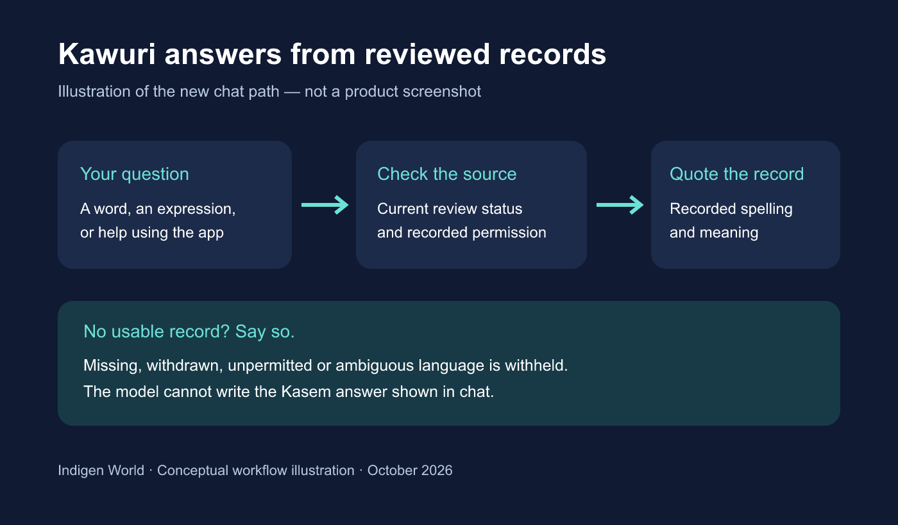

Kawuri should help people use the community's language record. It should not confidently teach a phrase that our records do not support. A reported answer showed why a reminder that an assistant can be wrong is not enough.

Kawuri's chat answers are now built by the server from recorded language and fixed app-help text. The model may help identify what a question asks, but its written answer is never displayed. It cannot invent a Kasem spelling, compose a sentence from individual words, or invent a response to a greeting.
Whole contributor expressions have a route into these answers. Each candidate is checked against its original submission's current review and permission records. A stale training index cannot make a rejected, withdrawn or unpermitted submission usable. This is local lookup and display; contributor expressions are not uploaded to the model, and this update does not train a model or change anyone's recorded permission.
Ask for a particular word or expression, or ask for common expressions. Kawuri quotes matching records, their recorded alternatives, and available context and dialect. A request for a whole sentence needs a whole recorded sentence; having its individual words is not enough.
If no usable record matches, Kawuri says so and points to Community or contribution for review. Strings that bundle several expressions or include ambiguous editorial instructions are withheld rather than automatically rewritten. Practice uses a published dictionary word and checks the recorded spelling.
Learners receive traceable recorded forms rather than confident model guesses. Contributors' approved work can support answers, and withdrawals and earlier permission refusals stay effective. Human review can still contain errors; a quoted record is not proof that a form suits every dialect or situation.
Implementation and verification are in progress. Production availability will be confirmed after the backend rollout. No new mobile app binary or Blogger publication has been released by preparing this article.
Kawuri chat is currently limited to recorded language, dictionary spelling practice and fixed app help. Free-form cultural answers, generated grammar explanations and invented language exercises are withheld. Creation and media-analysis tools remain separate capabilities and are not proof of a translation's correctness. Older chat messages are not rewritten; start a new question to use the revised answer path.